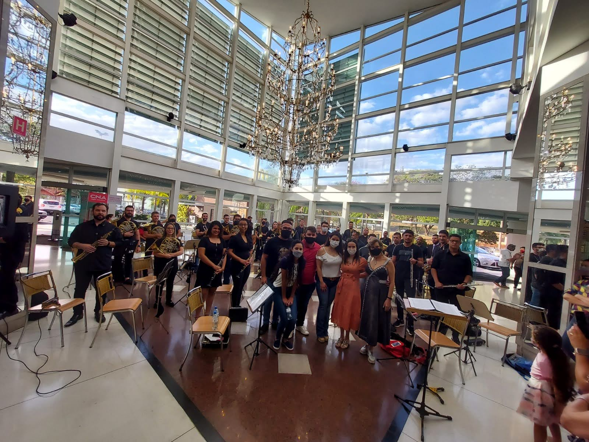

|  | Contato: Fone:(17)3000-8000 Celular: (17)99100-0000 E-mail:bandasinfonicadecatanduva@gmail.com |
| Toca algum instrumento? Gosta de Música? Estamos com vagas abertas para musicistas. Pré-requesitos: A inscrição é gratuita. Para se increver é necessário que você seja maior de 14 anos e possua conhcimento prático em algum instrumento (sopro, cordas, percussão), após a realização do cadastro, você receberá as informações sobre o cronograma de ensaios e apresentações futuras. |
Inscreva-se |